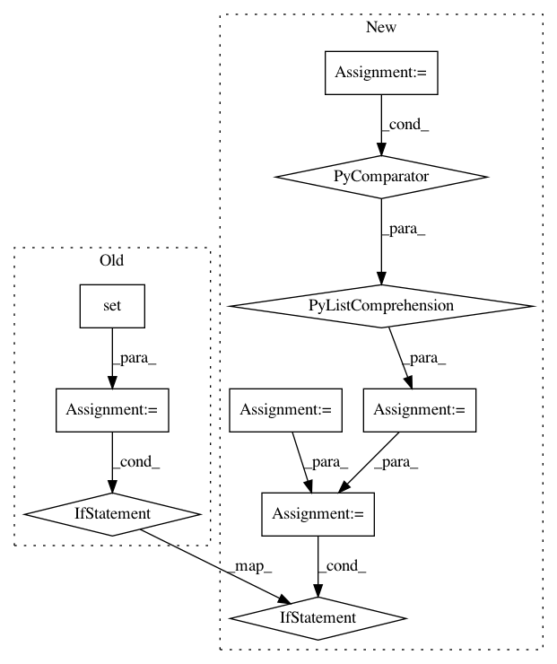

eaf4c400b8ce7c952b06525e845fbaa40c0c1d22,tests/tpot_tests.py,,test_mutNodeReplacement,#,1736
Before Change
if new_prims_list == old_prims_list: // Terminal mutated
assert new_ret_type_list == old_ret_type_list
else: // Primitive mutated
diff_prims = list(set(new_prims_list).symmetric_difference(old_prims_list))
if len(diff_prims) > 1: // Sometimes mutation randomly replaces an operator that already in the pipelines
assert diff_prims[0].ret == diff_prims[1].ret
assert mut_ind[0][0].ret == Output_Array
def test_mutNodeReplacement_2():
After Change
if new_prims_list == old_prims_list: // Terminal mutated
assert new_ret_type_list == old_ret_type_list
else: // Primitive mutated
diff_prims = [x for x in new_prims_list if x not in old_prims_list]
diff_prims += [x for x in old_prims_list if x not in new_prims_list]
if len(diff_prims) > 1: // Sometimes mutation randomly replaces an operator that already in the pipelines
assert diff_prims[0].ret == diff_prims[1].ret
assert mut_ind[0][0].ret == Output_Array
def test_mutNodeReplacement_2():
In pattern: SUPERPATTERN
Frequency: 3
Non-data size: 10
Instances
Project Name: EpistasisLab/tpot
Commit Name: eaf4c400b8ce7c952b06525e845fbaa40c0c1d22
Time: 2017-11-14
Author: weixuanf@pennmedicine.upenn.edu
File Name: tests/tpot_tests.py
Class Name:
Method Name: test_mutNodeReplacement
Project Name: SpiNNakerManchester/sPyNNaker
Commit Name: 73162ce7ca689cd10f67b823f54d3fbf81e8ee91
Time: 2021-02-25
Author: donal.k.fellows@manchester.ac.uk
File Name: doc/source/conf.py
Class Name:
Method Name: filtered_files
Project Name: EpistasisLab/tpot
Commit Name: 3dc40701a4b4b0fbb23b191ad996412072251be5
Time: 2017-11-15
Author: weixuanf@pennmedicine.upenn.edu
File Name: tests/tpot_tests.py
Class Name:
Method Name: test_mutNodeReplacement